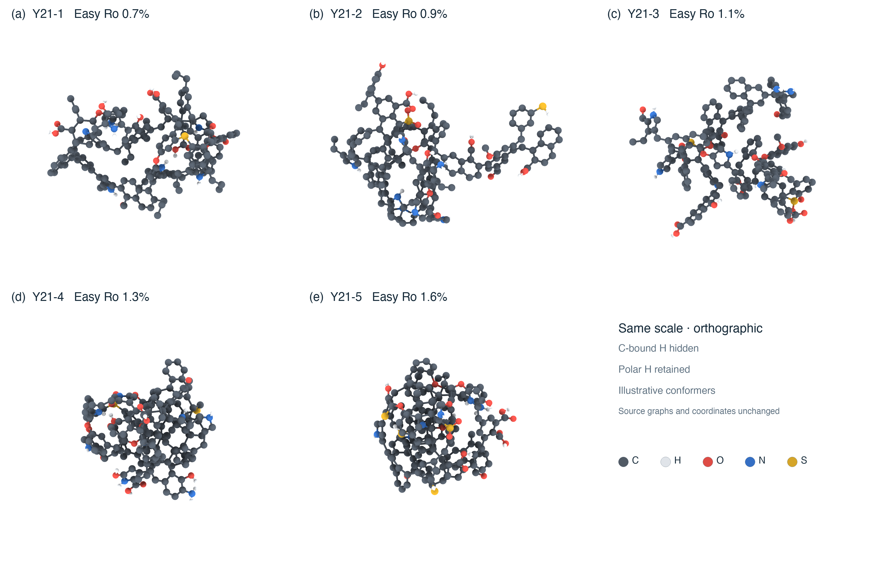
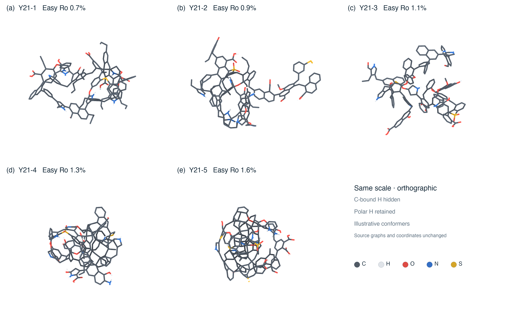

Kerogen models · figures and structure atlases
Graphical views of the public models. Three-dimensional figures use the v0.1.0 source coordinates; two-dimensional drawings represent the same candidate chemical graphs.
A · ChimeraX ball-and-stick plate
Consistent orthographic projection, spatial scale, lighting and element colors. C-bound H is hidden; polar H is retained.


B · ChimeraX skeleton plate
Reduced atom occlusion reveals rings and connections. These are the same conformers as in plate A.


2-D structures and connectivity inspection
Complete drawings retain all connections; dense crosslinks still intersect in the plane. The connection-indexed atlases show local units separately. Paired L labels restore the original bonds; atom IDs match the SDF. This is a viewing convention, not chemical cleavage.
| Model | Complete 2-D drawing | Atom-indexed drawing | Connection atlas |
|---|
Drawing bond lengths are not used for geometry analysis. SDF/SMILES remain authoritative for chemical connectivity; 3-D coordinates are illustrative candidate conformers.
Models and figures: CC BY 4.0 · Website code: MIT · Model source: release v0.1.0
3-D rendering: UCSF ChimeraX 1.12; 2-D depictions: RDKit. These are nonunique candidate structures and illustrative conformers.